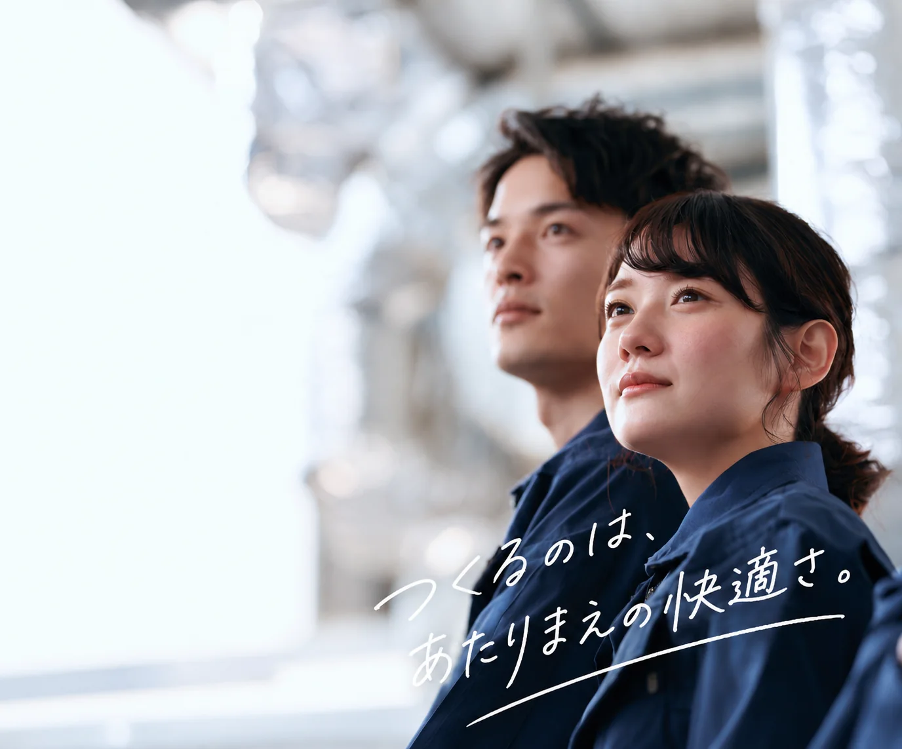
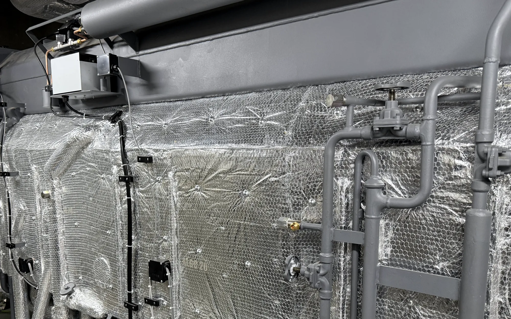

藤井冷熱は、名古屋市中川区で創業から約50年、親子三代で続く保温・断熱・板金工事の会社です。愛知・岐阜・三重で、配管・ダクトの保温から、冷媒管や屋外配管のラッキング、板金仕上げまでを一貫して請け負います。曲がり、分岐、バルブまわり。納まりの難しい箇所ほど、技術の差が出る仕事です。
保温と板金を別々の業者へ発注する必要はありません。打ち合わせの手間と、工程の待ち時間を減らせます。現場での納まりのご相談も、その場で判断します。
創業から約50年、親子三代にわたって保温板金一筋で続けてきました。現場で身につけた技術を、次の世代へ渡し続けています。品質を落とさずに三代続けてきたことが、いちばんの実績です。
For clients ／ Services
保温・断熱・板金。
この三つに、絞ってきました。
設備工事全般を扱うのではなく、保温・断熱・板金の三つを専門にしてきました。絞ってきたからこそ、お任せいただける仕事があります。

冷温水管や蒸気配管に保温材を施工し、配管表面の結露を抑えます。結露を放置すると水が垂れ、天井材や設備の劣化につながります。流体の温度と設置環境に応じて、材質と厚みを選定します。

空調ダクトを保温し、送風の温度を保ったまま各所へ届く状態にします。天井裏や機械室など、施工条件の厳しい場所が多い工事です。

冷媒管の保温材を金属板で覆い、雨風や紫外線による劣化から保護します。人の目に触れる場所に残る工程のため、納まりと仕上がりの美しさまで含めて施工します。
雨風や紫外線にさらされる屋外配管を、板金で保護します。
用途と条件から材質と厚みを選定し、隙間なく納めます。
現場の形状に合わせて板金を加工し、納まりまで整えます。
上記に当てはまらない工事も、まずはご相談ください。
For clients ／ Works
施工実績



※ 掲載しているのは実績の一部です。対象物・業種・規模・材料・工期・現場での課題と対応を、一件ずつ記録して追加していきます。
For clients ／ Flow
電話一本から、
施工まで。
ご連絡をいただいたあと、どう進むのか。先にお伝えしておきます。
- 01お電話でご相談
工事の内容と現場の状況をうかがいます。図面はなくても差し支えありません。この段階で費用は発生しません。
- 02現場を見せていただく
必要に応じて現場へうかがい、対象・範囲・納まりを確認します。材質と厚みも、この段階で決定します。
- 03お見積もり
内容を確認したうえで、お見積もりをご提示します。相見積もりもご遠慮なくお申し付けください。費用が発生する場合は、事前にご説明します。
- 04施工
日程を調整のうえ着工します。工程の途中で変更が生じた場合も、その都度ご相談しながら進めます。
For clients ／ About us
三代分の技術を、
これからの形にする。
創業から約50年。三代にわたって、同じ仕事を続けてきました。職人の技術は、短期間で身につくものではありません。受け継いだものを守りながら、これからの建設業に合う会社へ変わっていく。その両方に、同じだけ力を入れています。
施工品質、工期の正確さ、現場での対応力、約束を守ること。その積み重ねの先に、日本で一番技術力のある保温会社になる道があると考えています。


For clients ／ Company
会社概要
対応エリア：愛知県・岐阜県・三重県 そのほかの地域もご相談ください
- Company
- 藤井冷熱
- Representative
- 藤井 築路（フジイ チクミチ）
- Business
- 熱絶縁工事（保温・断熱・板金）
- Address
- 〒454-0925
愛知県名古屋市中川区中須町字藤六28-39 - Tel
- 052-353-7997
本社代表 - License
- 愛知県知事許可 第105680号
For clients ／ FAQ
工事について
よくあるご質問
可能です。まずは工事内容を確認したうえで、お見積もりをご案内します。
問題ありません。内容を確認したうえで、適正な施工方法と金額をご提案します。
図面はなくても差し支えありません。必要に応じて現場へうかがい、対象と範囲、納まりを確認します。
かかりません。お電話でのご相談から現地確認までの段階で、費用は発生しません。費用が発生する場合は、事前にご説明します。
相談の段階で突然費用が発生するような進め方はしません。費用がかかる場合は、事前にご説明します。
その必要はありません。保温材の施工から板金仕上げまで一社で対応します。打ち合わせの手間と、工程の待ち時間を減らせます。
愛知県・岐阜県・三重県の東海3県が中心です。そのほかの地域も、まずはご相談ください。
どちらも対応します。工場、ビル・テナント、病院・施設、商業施設、屋外まで、新築・改修を問わず承ります。
日程や現場状況によりますが、まずはご連絡ください。可能な範囲で対応を検討します。
For clients ／ Contact
担当の藤井が、
直接うかがいます。
「こんな工事はできますか」の一言からで結構です。折り返しをお待たせすることなく、その場でお話をうかがいます。
お電話が難しい場合は、フォームからでもご連絡いただけます。
New initiative
工事会社が、
システムをつくる。
藤井冷熱では、工事と並行してシステム開発にも取り組んでいます。現場を知る人間がつくるからこそ、現場で本当に使えるものになる。そう考えています。
建設業・設備業向けアプリ開発
現場業務を効率化するシステム
AIの活用と業務改善

3年後の自分が、
見える会社に。
未経験の方も、他業種からの転職も歓迎します。技術を磨く道、チームを持つ道、現場を管理する道、ITに関わる道。どこへ進みたいかをうかがったうえで、必要な経験を一緒に考えます。
入社安全・道具・材料から
基礎を身につける先輩について現場を覚える
ここから、進む道が分かれます
- 現場
スペシャリスト難しい形ほど任される職人へ - 職長・
チームリーダー自分のチームで現場を回す - 現場管理・
教育後輩を育てる側にまわる - IT・
システム部門現場を知る人がつくる側へ